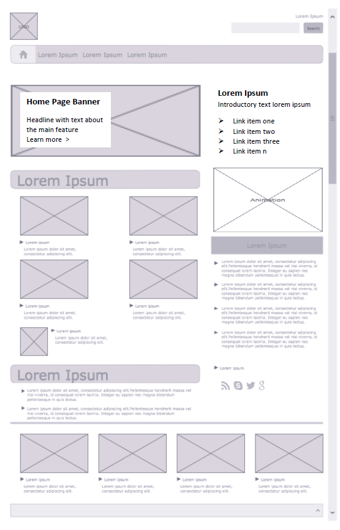

Week 07 Homework
Implement HTML/CSS to Build the Adjacent Layout
- Open file
/schedule/week-07/02/after-class/week07-homework.pdffrom the class repo. - Create HTML/CSS to implement a flexbox layout matching the .pdf file as closely as you can. (Use shaded boxes —
divelements with width, height, and grey background-color — in place of the image placeholders (x-ed out boxes). - Approximate the sizes of the shaded boxes. For example, the big page banner looks to my eye about twice as wide as the list block to its right.
- If you can follow instructions here to get the Font Awesome stylesheet linked in your code, then use it to represent the social media icons in the right column. It's acceptable to simply add a shaded box labeled 'social media icons' or similar in place of the
faicons. - Create a new folder in your personal GitHub repo for
week07-homework - Upload your new HTML and CSS files.
- View in GitHub Pages and work with your HTML and CSS until they visually resemble the
.pdffile. - Submit your HTML and CSS files to Blackboard along with your GitHub Pages URL.
